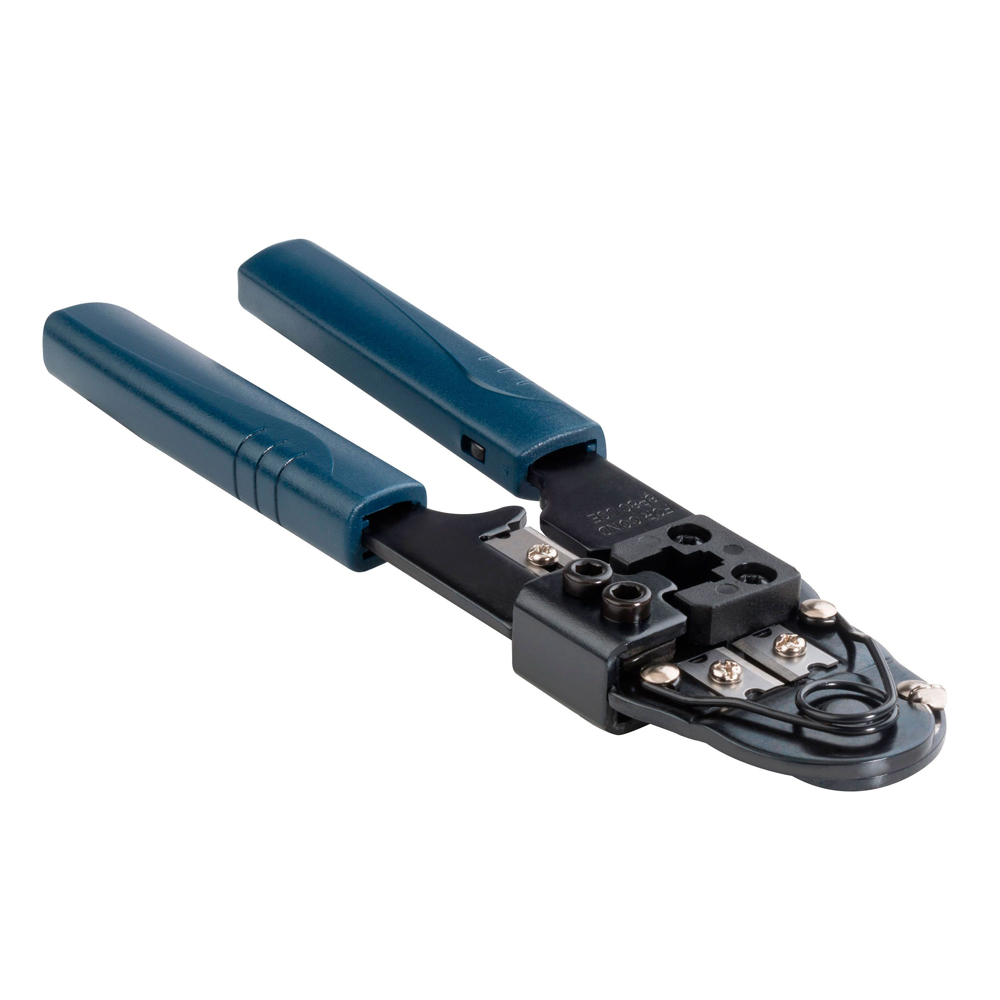
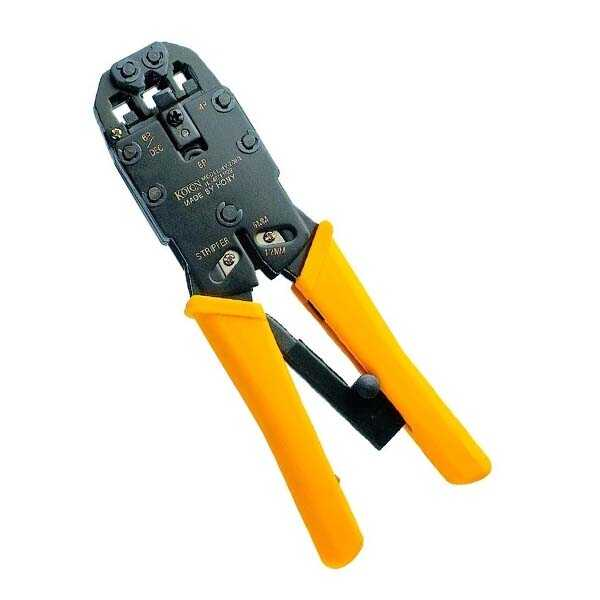

Ponchadora
Descripcion: La ponchadora, también conocida como herramienta de impacto o herramienta de crimpado, es un dispositivo esencial en la instalación de redes de cables, especialmente en la terminación de cables de par trenzado (como cables Ethernet) en conectores de red (como RJ-45) y paneles de parcheo.
Crimpadora
Descripcion: Una crimpadora es una herramienta utilizada para unir cables a conectores mediante un proceso llamado "crimpado" o "engastado". Este proceso asegura que el cable y el conector estén firmemente unidos, permitiendo una conexión eléctrica estable y segura. La crimpadora es esencial en la instalación y mantenimiento de redes de telecomunicaciones, sistemas de audio/video, y otras aplicaciones de cableado.
Desforradora

Descripcion: La desforradora es una herramienta utilizada para preparar cables eléctricos o de telecomunicaciones antes de su terminación. Su función principal es eliminar el aislamiento de los cables, permitiendo así que los conductores internos puedan ser conectados a otros dispositivos o equipos.
Tester

Descripcion: Un tester (también conocido como probador o analizador) es un dispositivo utilizado para verificar y medir diversas características y parámetros de los componentes y cables de una red, así como para diagnosticar problemas y asegurar el correcto funcionamiento de la infraestructura de red.